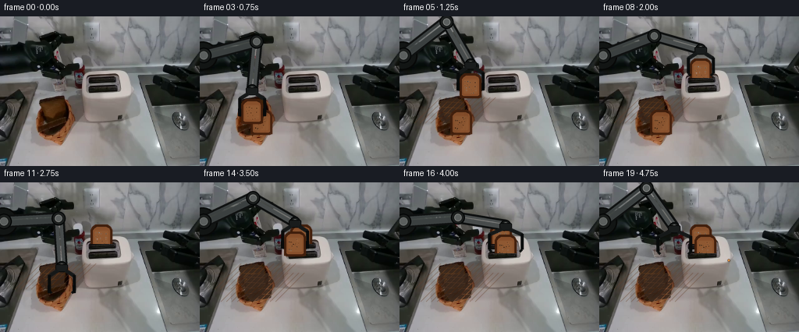
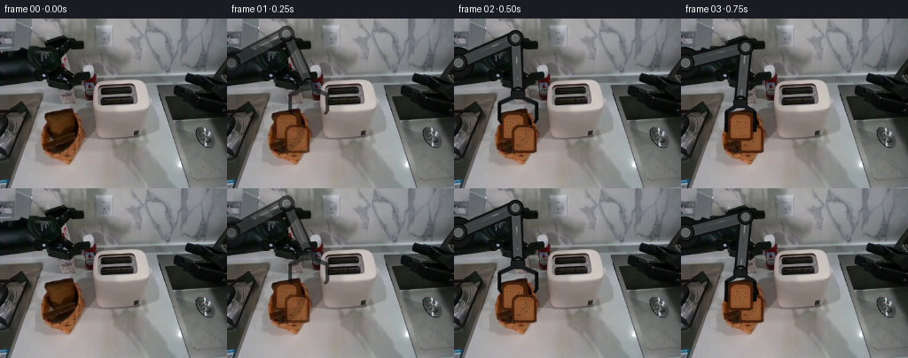

CODING AGENTS AS PIXEL WORLD MODELS
traex/GPT-5.6-Sol · common50_0001
点击播放 · 原生 RGB 像素
逐轮保存的候选
回放视频、检查图与代码变化。
每份候选均可单独播放。实际图片检查记录在下方工具轨迹中。
候选 01播放与检查图
点击播放 · 原生 RGB 像素


展开代码变化
--- 上一保存版本
+++ 本次保存版本
@@ -0,0 +1,225 @@
+from pathlib import Path
+import math
+import numpy as np
+from PIL import Image, ImageDraw, ImageFilter
+import artifact_io
+
+ROOT = Path(__file__).resolve().parent
+BASE = Image.open(ROOT / "first_frame.png").convert("RGB")
+W, H = BASE.size
+AA = 4
+RNG = np.random.default_rng(91827)
+
+
+def ease(t):
+ t = max(0.0, min(1.0, float(t)))
+ return t*t*(3.0-2.0*t)
+
+
+def interp(a, b, t):
+ t = ease(t)
+ return (a[0] + (b[0]-a[0])*t, a[1] + (b[1]-a[1])*t)
+
+
+def path_value(keys, f):
+ """Smooth interpolation through (frame, (x,y)) keys."""
+ if f <= keys[0][0]: return keys[0][1]
+ if f >= keys[-1][0]: return keys[-1][1]
+ for (fa,a),(fb,b) in zip(keys[:-1], keys[1:]):
+ if fa <= f <= fb:
+ return interp(a,b,(f-fa)/(fb-fa))
+ return keys[-1][1]
+
+
+def rgba_layer():
+ return Image.new("RGBA", (W*AA,H*AA), (0,0,0,0))
+
+
+def P(pt): return tuple(int(round(v*AA)) for v in pt)
+def S(v): return int(round(v*AA))
+
+
+def composite_scaled(im, layer, opacity=1.0):
+ layer = layer.resize((W,H), Image.Resampling.LANCZOS)
+ if opacity < 1:
+ a = layer.getchannel("A").point(lambda x: int(x*opacity))
+ layer.putalpha(a)
+ return Image.alpha_composite(im.convert("RGBA"), layer)
+
+
+def bread_sprite(seed=0):
+ """A rigid, textured square slice with a dark brown crust."""
+ sw, sh = 32*AA, 36*AA
+ lay = Image.new("RGBA", (sw,sh), (0,0,0,0))
+ d = ImageDraw.Draw(lay)
+ # toast silhouette: square lower body and gently rounded upper corners
+ outer = [(2,10),(4,6),(8,3),(24,3),(28,6),(30,10),(30,34),(2,34)]
+ d.polygon([P0(x,y) for x,y in outer], fill=(63,30,12,255))
+ d.rounded_rectangle((S0(2),S0(7),S0(30),S0(35)), radius=S0(4), fill=(66,31,12,255))
+ inner = [(5,11),(7,8),(10,6),(22,6),(26,8),(27,11),(27,31),(5,31)]
+ d.polygon([P0(x,y) for x,y in inner], fill=(133,78,43,255))
+ d.rounded_rectangle((S0(5),S0(9),S0(27),S0(32)), radius=S0(2.7), fill=(136,80,44,255))
+ # baked, slightly uneven center
+ d.rounded_rectangle((S0(7),S0(11),S0(25),S0(29)), radius=S0(2), fill=(142,88,50,255))
+ rr = np.random.default_rng(1200+seed)
+ for i in range(18):
+ x=float(rr.uniform(8,24)); y=float(rr.uniform(12,29)); r=float(rr.uniform(.25,.7))
+ col=(83,48,26,120) if i%3 else (183,125,77,105)
+ d.ellipse((S0(x-r),S0(y-r),S0(x+r),S0(y+r)), fill=col)
+ return lay.resize((32,36), Image.Resampling.LANCZOS)
+
+
+def P0(x,y): return (int(x*AA),int(y*AA))
+def S0(v): return int(v*AA)
+BREAD1 = bread_sprite(1)
+BREAD2 = bread_sprite(2)
+
+
+def paste_sprite(im, sprite, center, clip_bottom=None, opacity=1.0):
+ """Paste unchanged sprite, optionally occluded at a horizontal toaster rim."""
+ sp = sprite.copy()
+ x=int(round(center[0]-sp.width/2)); y=int(round(center[1]-sp.height/2))
+ if clip_bottom is not None:
+ keep=max(0,min(sp.height,int(round(clip_bottom-y))))
+ if keep<=0: return im
+ sp=sp.crop((0,0,sp.width,keep))
+ if opacity<1:
+ a=sp.getchannel('A').point(lambda q:int(q*opacity)); sp.putalpha(a)
+ im.alpha_composite(sp,(x,y))
+ return im
+
+
+def cover_removed_bread(im, which):
+ """Reveal the dark woven basket under a removed slice without disturbing its rim."""
+ lay=rgba_layer(); d=ImageDraw.Draw(lay)
+ if which==1:
+ poly=[(53,108),(73,104),(83,111),(82,133),(56,137),(49,128)]
+ else:
+ poly=[(62,119),(87,116),(94,126),(91,148),(66,153),(57,142)]
+ d.polygon([P(q) for q in poly], fill=(57,40,29,235))
+ # tight crossing willow strands in the newly exposed basket interior
+ bx=min(q[0] for q in poly); by=min(q[1] for q in poly)
+ ex=max(q[0] for q in poly); ey=max(q[1] for q in poly)
+ for k in range(-30,45,7):
+ d.line([P((bx+k,ey)),P((ex+k,by))], fill=(101,65,42,105), width=S(.8))
+ for yy in np.arange(by+5,ey,7):
+ d.line([P((bx,yy)),P((ex,yy+2))], fill=(126,79,48,80), width=S(.7))
+ return composite_scaled(im,lay)
+
+
+def ik(wrist):
+ # Fixed left shoulder and exactly fixed rigid-link lengths.
+ sx,sy=5.0,50.0; l1,l2=70.0,62.0
+ dx,dy=wrist[0]-sx,wrist[1]-sy
+ dist=max(8.0,min(math.hypot(dx,dy),l1+l2-.2))
+ ux,uy=dx/dist,dy/dist
+ a=(l1*l1-l2*l2+dist*dist)/(2*dist)
+ h=math.sqrt(max(0,l1*l1-a*a))
+ # upper elbow solution, matching the dark left-side robot in the source view
+ ex=sx+a*ux+h*uy
+ ey=sy+a*uy-h*ux
+ return (sx,sy),(ex,ey),wrist
+
+
+def draw_arm(im, grasp_center, closed, opacity=1.0):
+ """Draw a stable articulated left arm; link dimensions never change."""
+ wrist=(grasp_center[0],grasp_center[1]-27)
+ shoulder,elbow,wrist=ik(wrist)
+ lay=rgba_layer(); d=ImageDraw.Draw(lay)
+ # broad fixed base at the left image edge
+ d.ellipse((S(-16),S(32),S(23),S(69)), fill=(18,21,20,255), outline=(7,8,7,255), width=S(2))
+ # shadows/outlines then metallic rigid bodies
+ d.line([P(shoulder),P(elbow)], fill=(15,17,17,255), width=S(17))
+ d.line([P(elbow),P(wrist)], fill=(13,15,15,255), width=S(15))
+ d.line([P(shoulder),P(elbow)], fill=(59,64,64,255), width=S(12))
+ d.line([P(elbow),P(wrist)], fill=(72,76,76,255), width=S(10))
+ # highlights maintain clear cylindrical metal form
+ d.line([P((shoulder[0],shoulder[1]-2)),P((elbow[0],elbow[1]-2))], fill=(115,119,118,135), width=S(2))
+ d.line([P((elbow[0],elbow[1]-1.5)),P((wrist[0],wrist[1]-1.5))], fill=(128,130,128,125), width=S(1.6))
+ for c,rad in [(shoulder,10),(elbow,9),(wrist,7)]:
+ d.ellipse((S(c[0]-rad),S(c[1]-rad),S(c[0]+rad),S(c[1]+rad)), fill=(27,30,29,255), outline=(5,7,7,255), width=S(1.4))
+ d.ellipse((S(c[0]-rad*.52),S(c[1]-rad*.52),S(c[0]+rad*.52),S(c[1]+rad*.52)), fill=(91,95,94,255), outline=(145,147,144,190), width=S(.8))
+ # fixed wrist coupler, parallel left gripper, and two rigid fingers
+ gx,gy=grasp_center
+ d.rounded_rectangle((S(gx-8),S(gy-30),S(gx+8),S(gy-20)),radius=S(2),fill=(25,28,28,255),outline=(6,7,7,255),width=S(1))
+ gap=16 if closed else 21
+ # knuckle bars
+ d.line([P((gx-5,gy-22)),P((gx-gap,gy-15))],fill=(21,24,24,255),width=S(5))
+ d.line([P((gx+5,gy-22)),P((gx+gap,gy-15))],fill=(21,24,24,255),width=S(5))
+ # long fingers flank the bread and never bend/deform
+ d.line([P((gx-gap,gy-16)),P((gx-gap,gy+4))],fill=(8,10,10,255),width=S(4))
+ d.line([P((gx+gap,gy-16)),P((gx+gap,gy+4))],fill=(8,10,10,255),width=S(4))
+ d.line([P((gx-gap,gy+4)),P((gx-gap+3,gy+7))],fill=(11,13,13,255),width=S(3))
+ d.line([P((gx+gap,gy+4)),P((gx+gap-3,gy+7))],fill=(11,13,13,255),width=S(3))
+ return composite_scaled(im,lay,opacity)
+
+
+def source_breads(im, f):
+ # Clarify the two initially overlapping square slices in the basket.
+ if f <= 2:
+ paste_sprite(im,BREAD1,(67,121),opacity=.82 if f==1 else .95)
+ if f <= 10:
+ paste_sprite(im,BREAD2,(79,135),opacity=.76 if f==1 else .94)
+ return im
+
+# grasp-center trajectories. A short raised arc keeps the bread clear of basket and toaster.
+FIRST=[(1,(92,101)),(2,(72,111)),(3,(67,121)),(4,(74,108)),(5,(91,88)),
+ (6,(111,70)),(7,(130,63)),(8,(130,69))]
+RETURN=[(8,(130,69)),(9,(108,79)),(10,(89,105)),(11,(79,135))]
+SECOND=[(11,(79,135)),(12,(87,113)),(13,(104,94)),(14,(122,78)),
+ (15,(136,74)),(16,(136,82)),(17,(136,67)),(18,(114,67)),(19,(96,85))]
+
+
+def make_frame(f):
+ if f==0:
+ return np.asarray(BASE,dtype=np.uint8).copy()
+ im=BASE.convert('RGBA')
+ # Once a slice leaves, reveal the same stationary woven basket beneath it.
+ if f>=4: im=cover_removed_bread(im,1)
+ if f>=12: im=cover_removed_bread(im,2)
+ im=source_breads(im,f)
+
+ # Inserted bread remains completely fixed and is clipped by the corresponding slot rim.
+ if f>=8:
+ paste_sprite(im,BREAD1,(130,69),clip_bottom=79,opacity=1.0)
+ if f>=16:
+ paste_sprite(im,BREAD2,(136,82),clip_bottom=91,opacity=1.0)
+
+ if f<=8:
+ pos=path_value(FIRST,f); closed=(f>=3)
+ im=draw_arm(im,pos,closed,opacity=.70 if f==1 else 1.0)
+ # carried first slice (same pixel dimensions at every point)
+ if 3<=f<=7: paste_sprite(im,BREAD1,pos)
+ # At insertion frame the bread is behind the toaster rim, already drawn above.
+ elif f<=11:
+ pos=path_value(RETURN,f)
+ im=draw_arm(im,pos,closed=(f==11),opacity=1.0)
+ else:
+ pos=path_value(SECOND,f)
+ im=draw_arm(im,pos,closed=(11<=f<=15),opacity=1.0)
+ if 11<=f<=15: paste_sprite(im,BREAD2,pos)
+
+ # Gripper is foreground during a grasp: redraw only its tiny contact pads for clarity.
+ if (3<=f<=7) or (11<=f<=15):
+ lay=rgba_layer(); d=ImageDraw.Draw(lay); x,y=pos
+ for xx,sgn in [(x-16,1),(x+16,-1)]:
+ d.rounded_rectangle((S(xx-2),S(y-3),S(xx+2),S(y+7)),radius=S(1),fill=(8,10,10,255))
+ im=composite_scaled(im,lay)
+
+ # After both slices are seated, the toaster's small amber status lamp comes on steadily.
+ if f>=17:
+ lay=rgba_layer(); d=ImageDraw.Draw(lay)
+ d.ellipse((S(164),S(98),S(168),S(102)),fill=(70,35,12,130))
+ d.ellipse((S(165),S(99),S(167),S(101)),fill=(238,143,48,230))
+ im=composite_scaled(im,lay)
+ return np.asarray(im.convert('RGB'),dtype=np.uint8)
+
+
+def main():
+ frames=np.stack([make_frame(i) for i in range(20)],axis=0).astype(np.uint8)
+ assert frames.shape==(20,192,256,3)
+ assert np.array_equal(frames[0],np.asarray(BASE)), "frame zero changed"
+ artifact_io.save(frames,ROOT)
+
+if __name__=='__main__':
+ main()
可观测工具轨迹
实际执行的命令与返回图片。
命令 1exit 0
/bin/bash -lc 'cat GENERATION_RULES.md'
命令 2exit 0
/bin/bash -lc "cat prompt.txt && printf '\\n---FILES---\\n' && find . -maxdepth 2 -type f -printf '%p %s bytes\\n' | sort"
命令 3exit 0
/bin/bash -lc "python3 - <<'PY'
from PIL import Image
im=Image.open('first_frame.png')
print(im.mode, im.size)
print('extrema', im.getextrema())
PY"命令 4exit 0
/bin/bash -lc "cat task_spec.json && sed -n '1,240p' artifact_io.py"
命令 5exit 0
/bin/bash -lc "python3 - <<'PY'
from PIL import Image
import numpy as np
im=np.asarray(Image.open('first_frame.png')).astype(float)
# coarse per 8x8 map semantic: dark K, white W, gray G, red R, green E, blue B, yellow Y, brown N
for y in range(0,192,6):
s=''
for x in range(0,256,4):
p=im[y:y+6,x:x+4].mean((0,1)); r,g,b=p
mx=max(p); mn=min(p)
if mx<45: c='K'
elif mx<75: c='k'
elif mn>210: c='W'
elif mx-mn<18: c='g' if mx<145 else 'w'
elif r>1.3*g and r>1.4*b: c='R'
elif r>1.25*b and g>1.15*b: c='N'
elif g>1.25*r and g>1.15*b: c='E'
elif b>1.25*r and b>1.12*g: c='B'
elif r>1.25*b and g>1.2*b: c='Y'
else: c='.'
s+=c
print(s)
PY"命令 6exit 0
/bin/bash -lc "python3 - <<'PY'
from PIL import Image
import numpy as np
from sklearn.cluster import MiniBatchKMeans
im=np.asarray(Image.open('first_frame.png'))
h,w,_=im.shape
X=im.reshape(-1,3)
km=MiniBatchKMeans(16, random_state=0, n_init=5, batch_size=4096).fit(X)
for n,c in sorted(zip(np.bincount(km.labels_,minlength=16),km.cluster_centers_),reverse=True): print(n, tuple(np.rint(c).astype(int)))
print('\\ncoarse labels 8x8 blocks, nearest palette chars')
# semantic color groups via HSV crude, report mean per 16x12 cell as nearest cluster and char
cent=km.cluster_centers_; chars='0123456789ABCDEF'
for yy in range(0,h,8):
s=''
for xx in range(0,w,8):
p=im[yy:yy+8,xx:xx+8].reshape(-1,3).mean(0)
s+=chars[np.argmin(((cent-p)**2).sum(1))]
print(s)
PY"命令 7exit 0
/bin/bash -lc "python3 - <<'PY'
import cv2, numpy as np
im=cv2.imread('first_frame.png'); rgb=im[:,:,::-1]; r,g,b=np.moveaxis(rgb,-1,0)
for name,m in {
'brown':(r>g*1.25)&(r>b*1.35)&(r>50),
'warm':(r>b*1.18)&(g>b*1.05)&(r>55)&((r-b)>15),
'dark':rgb.max(2)<55,
'white':rgb.min(2)>185,
}.items():
n,L,st,cen=cv2.connectedComponentsWithStats(m.astype('uint8'),8)
print('\\n',name,'total',m.sum())
out=[]
for i in range(1,n):
x,y,w,h,a=st[i];
if a>=8: out.append((a,(x,y,w,h),tuple(np.round(cen[i],1))))
print(sorted(out,reverse=True)[:30])
PY"命令 8exit 0
/bin/bash -lc "python3 - <<'PY'
from PIL import Image
import numpy as np
im=np.array(Image.open('first_frame.png'))
# 4x4 blocks in region y72+, classify dominant intensity and brown
chars=' .:-=+*#%@'
for y in range(72,192,4):
s=''
for x in range(0,256,4):
q=im[y:y+4,x:x+4]; p=q.mean((0,1)); r,g,b=p
if r>1.2*g and r>1.32*b and r>55: c='B'
elif r>b*1.14 and g>b*1.08 and r-b>12: c='b'
else: c=chars[min(9,int(p.mean()/25.6))]
s+=c
print(f'{y:03d} '+s)
PY"命令 9exit 0
/bin/bash -lc "python3 - <<'PY'
import cv2,numpy as np
im=cv2.imread('first_frame.png'); gray=cv2.cvtColor(im,cv2.COLOR_BGR2GRAY)
ed=cv2.Canny(gray,45,100)
co,_=cv2.findContours(ed,cv2.RETR_LIST,cv2.CHAIN_APPROX_SIMPLE)
out=[]
for c in co:
x,y,w,h=cv2.boundingRect(c); a=cv2.contourArea(c); per=cv2.arcLength(c,True)
if a>15 and w>4 and h>3: out.append((round(a,1),(x,y,w,h),round(per,1)))
print('\\n'.join(map(str,sorted(out,reverse=True)[:100])))
PY"命令 10exit 0
/bin/bash -lc "python3 - <<'PY'
from PIL import Image
import numpy as np
from sklearn.cluster import KMeans
im=np.array(Image.open('first_frame.png')); reg=im[95:167,38:116]
km=KMeans(8,random_state=2,n_init=10).fit(reg.reshape(-1,3)); cs=km.cluster_centers_; labs=km.labels_.reshape(reg.shape[:2]); chars='01234567'
print('centers')
for i,c in enumerate(cs): print(i,np.rint(c).astype(int), 'n', (labs==i).sum())
for y in range(0,72,3):
print(f'{y+95:03}', ''.join(chars[np.bincount(labs[y:y+3,x:x+3].ravel(),minlength=8).argmax()] for x in range(0,78,3)))
PY"命令 11exit 0
/bin/bash -lc "python3 - <<'PY'
from PIL import Image
import numpy as np
im=np.array(Image.open('first_frame.png'))
# detailed top-left semantic 2x2 cells chars based brightness and hue
for y in range(0,108,2):
s=''
for x in range(0,112,2):
p=im[y:y+2,x:x+2].mean((0,1)); v=p.mean(); d=p.max()-p.min(); r,g,b=p
if r>g*1.25 and r>b*1.5 and r>50:c='B'
elif v<20:c='@'
elif v<40:c='#'
elif v<60:c='O'
elif v<80:c='o'
elif v<100:c='+'
elif v<120:c='='
elif v<140:c='-'
elif v<160:c=':'
elif v<180:c='.'
else:c=' '
s+=c
print(f'{y:03} {s}')
PY"命令 12exit 0
/bin/bash -lc "python3 - <<'PY'
from PIL import Image
import numpy as np
im=np.array(Image.open('first_frame.png'))
for box in [(90,40,112,105),(108,68,183,108),(40,98,108,170),(0,15,110,82),(180,40,256,150)]:
x0,y0,x1,y1=box;q=im[y0:y1,x0:x1]
print(box,'mean',q.mean((0,1)).round(1),'med',np.median(q.reshape(-1,3),0),'min',q.min((0,1)),'max',q.max((0,1)))
print(' rows brightness',np.round(q.mean((1,2))[::max(1,(y1-y0)//10)],1))
PY"命令 13exit 0
/bin/bash -lc "cat > generate.py <<'PY'
from pathlib import Path
import math
import numpy as np
from PIL import Image, ImageDraw, ImageFilter
import artifact_io
ROOT = Path(__file__).resolve().parent
BASE = Image.open(ROOT / \"first_frame.png\").convert(\"RGB\")
W, H = BASE.size
AA = 4
RNG = np.random.default_rng(91827)
def ease(t):
t = max(0.0, min(1.0, float(t)))
return t*t*(3.0-2.0*t)
def interp(a, b, t):
t = ease(t)
return (a[0] + (b[0]-a[0])*t, a[1] + (b[1]-a[1])*t)
def path_value(keys, f):
\"\"\"Smooth interpolation through (frame, (x,y)) keys.\"\"\"
if f <= keys[0][0]: return keys[0][1]
if f >= keys[-1][0]: return keys[-1][1]
for (fa,a),(fb,b) in zip(keys[:-1], keys[1:]):
if fa <= f <= fb:
return interp(a,b,(f-fa)/(fb-fa))
return keys[-1][1]
def rgba_layer():
return Image.new(\"RGBA\", (W*AA,H*AA), (0,0,0,0))
def P(pt): return tuple(int(round(v*AA)) for v in pt)
def S(v): return int(round(v*AA))
def composite_scaled(im, layer, opacity=1.0):
layer = layer.resize((W,H), Image.Resampling.LANCZOS)
if opacity < 1:
a = layer.getchannel(\"A\").point(lambda x: int(x*opacity))
layer.putalpha(a)
return Image.alpha_composite(im.convert(\"RGBA\"), layer)
def bread_sprite(seed=0):
\"\"\"A rigid, textured square slice with a dark brown crust.\"\"\"
sw, sh = 32*AA, 36*AA
lay = Image.new(\"RGBA\", (sw,sh), (0,0,0,0))
d = ImageDraw.Draw(lay)
# toast silhouette: square lower body and gently rounded upper corners
outer = [(2,10),(4,6),(8,3),(24,3),(28,6),(30,10),(30,34),(2,34)]
d.polygon([P0(x,y) for x,y in outer], fill=(63,30,12,255))
d.rounded_rectangle((S0(2),S0(7),S0(30),S0(35)), radius=S0(4), fill=(66,31,12,255))
inner = [(5,11),(7,8),(10,6),(22,6),(26,8),(27,11),(27,31),(5,31)]
d.polygon([P0(x,y) for x,y in inner], fill=(133,78,43,255))
d.rounded_rectangle((S0(5),S0(9),S0(27),S0(32)), radius=S0(2.7), fill=(136,80,44,255))
# baked, slightly uneven center
d.rounded_rectangle((S0(7),S0(11),S0(25),S0(29)), radius=S0(2), fill=(142,88,50,255))
rr = np.random.default_rng(1200+seed)
for i in range(18):
x=float(rr.uniform(8,24)); y=float(rr.uniform(12,29)); r=float(rr.uniform(.25,.7))
col=(83,48,26,120) if i%3 else (183,125,77,105)
d.ellipse((S0(x-r),S0(y-r),S0(x+r),S0(y+r)), fill=col)
return lay.resize((32,36), Image.Resampling.LANCZOS)
def P0(x,y): return (int(x*AA),int(y*AA))
def S0(v): return int(v*AA)
BREAD1 = bread_sprite(1)
BREAD2 = bread_sprite(2)
def paste_sprite(im, sprite, center, clip_bottom=None, opacity=1.0):
\"\"\"Paste unchanged sprite, optionally occluded at a horizontal toaster rim.\"\"\"
sp = sprite.copy()
x=int(round(center[0]-sp.width/2)); y=int(round(center[1]-sp.height/2))
if clip_bottom is not None:
keep=max(0,min(sp.height,int(round(clip_bottom-y))))
if keep<=0: return im
sp=sp.crop((0,0,sp.width,keep))
if opacity<1:
a=sp.getchannel('A').point(lambda q:int(q*opacity)); sp.putalpha(a)
im.alpha_composite(sp,(x,y))
return im
def cover_removed_bread(im, which):
\"\"\"Reveal the dark woven basket under a removed slice without disturbing its rim.\"\"\"
lay=rgba_layer(); d=ImageDraw.Draw(lay)
if which==1:
poly=[(53,108),(73,104),(83,111),(82,133),(56,137),(49,128)]
else:
poly=[(62,119),(87,116),(94,126),(91,148),(66,153),(57,142)]
d.polygon([P(q) for q in poly], fill=(57,40,29,235))
# tight crossing willow strands in the newly exposed basket interior
bx=min(q[0] for q in poly); by=min(q[1] for q in poly)
ex=max(q[0] for q in poly); ey=max(q[1] for q in poly)
for k in range(-30,45,7):
d.line([P((bx+k,ey)),P((ex+k,by))], fill=(101,65,42,105), width=S(.8))
for yy in np.arange(by+5,ey,7):
d.line([P((bx,yy)),P((ex,yy+2))], fill=(126,79,48,80), width=S(.7))
return composite_scaled(im,lay)
def ik(wrist):
# Fixed left shoulder and exactly fixed rigid-link lengths.
sx,sy=5.0,50.0; l1,l2=70.0,62.0
dx,dy=wrist[0]-sx,wrist[1]-sy
dist=max(8.0,min(math.hypot(dx,dy),l1+l2-.2))
ux,uy=dx/dist,dy/dist
a=(l1*l1-l2*l2+dist*dist)/(2*dist)
h=math.sqrt(max(0,l1*l1-a*a))
# upper elbow solution, matching the dark left-side robot in the source view
ex=sx+a*ux+h*uy
ey=sy+a*uy-h*ux
return (sx,sy),(ex,ey),wrist
def draw_arm(im, grasp_center, closed, opacity=1.0):
\"\"\"Draw a stable articulated left arm; link dimensions never change.\"\"\"
wrist=(grasp_center[0],grasp_center[1]-27)
shoulder,elbow,wrist=ik(wrist)
lay=rgba_layer(); d=ImageDraw.Draw(lay)
# broad fixed base at the left image edge
d.ellipse((S(-16),S(32),S(23),S(69)), fill=(18,21,20,255), outline=(7,8,7,255), width=S(2))
# shadows/outlines then metallic rigid bodies
d.line([P(shoulder),P(elbow)], fill=(15,17,17,255), width=S(17))
d.line([P(elbow),P(wrist)], fill=(13,15,15,255), width=S(15))
d.line([P(shoulder),P(elbow)], fill=(59,64,64,255), width=S(12))
d.line([P(elbow),P(wrist)], fill=(72,76,76,255), width=S(10))
# highlights maintain clear cylindrical metal form
d.line([P((shoulder[0],shoulder[1]-2)),P((elbow[0],elbow[1]-2))], fill=(115,119,118,135), width=S(2))
d.line([P((elbow[0],elbow[1]-1.5)),P((wrist[0],wrist[1]-1.5))], fill=(128,130,128,125), width=S(1.6))
for c,rad in [(shoulder,10),(elbow,9),(wrist,7)]:
d.ellipse((S(c[0]-rad),S(c[1]-rad),S(c[0]+rad),S(c[1]+rad)), fill=(27,30,29,255), outline=(5,7,7,255), width=S(1.4))
d.ellipse((S(c[0]-rad*.52),S(c[1]-rad*.52),S(c[0]+rad*.52),S(c[1]+rad*.52)), fill=(91,95,94,255), outline=(145,147,144,190), width=S(.8))
# fixed wrist coupler, parallel left gripper, and two rigid fingers
gx,gy=grasp_center
d.rounded_rectangle((S(gx-8),S(gy-30),S(gx+8),S(gy-20)),radius=S(2),fill=(25,28,28,255),outline=(6,7,7,255),width=S(1))
gap=16 if closed else 21
# knuckle bars
d.line([P((gx-5,gy-22)),P((gx-gap,gy-15))],fill=(21,24,24,255),width=S(5))
d.line([P((gx+5,gy-22)),P((gx+gap,gy-15))],fill=(21,24,24,255),width=S(5))
# long fingers flank the bread and never bend/deform
d.line([P((gx-gap,gy-16)),P((gx-gap,gy+4))],fill=(8,10,10,255),width=S(4))
d.line([P((gx+gap,gy-16)),P((gx+gap,gy+4))],fill=(8,10,10,255),width=S(4))
d.line([P((gx-gap,gy+4)),P((gx-gap+3,gy+7))],fill=(11,13,13,255),width=S(3))
d.line([P((gx+gap,gy+4)),P((gx+gap-3,gy+7))],fill=(11,13,13,255),width=S(3))
return composite_scaled(im,lay,opacity)
def source_breads(im, f):
# Clarify the two initially overlapping square slices in the basket.
if f <= 2:
paste_sprite(im,BREAD1,(67,121),opacity=.82 if f==1 else .95)
if f <= 10:
paste_sprite(im,BREAD2,(79,135),opacity=.76 if f==1 else .94)
return im
# grasp-center trajectories. A short raised arc keeps the bread clear of basket and toaster.
FIRST=[(1,(92,101)),(2,(72,111)),(3,(67,121)),(4,(74,108)),(5,(91,88)),
(6,(111,70)),(7,(130,63)),(8,(130,69))]
RETURN=[(8,(130,69)),(9,(108,79)),(10,(89,105)),(11,(79,135))]
SECOND=[(11,(79,135)),(12,(87,113)),(13,(104,94)),(14,(122,78)),
(15,(136,74)),(16,(136,82)),(17,(136,67)),(18,(114,67)),(19,(96,85))]
def make_frame(f):
if f==0:
return np.asarray(BASE,dtype=np.uint8).copy()
im=BASE.convert('RGBA')
# Once a slice leaves, reveal the same stationary woven basket beneath it.
if f>=4: im=cover_removed_bread(im,1)
if f>=12: im=cover_removed_bread(im,2)
im=source_breads(im,f)
# Inserted bread remains completely fixed and is clipped by the corresponding slot rim.
if f>=8:
paste_sprite(im,BREAD1,(130,69),clip_bottom=79,opacity=1.0)
if f>=16:
paste_sprite(im,BREAD2,(136,82),clip_bottom=91,opacity=1.0)
if f<=8:
pos=path_value(FIRST,f); closed=(f>=3)
im=draw_arm(im,pos,closed,opacity=.70 if f==1 else 1.0)
# carried first slice (same pixel dimensions at every point)
if 3<=f<=7: paste_sprite(im,BREAD1,pos)
# At insertion frame the bread is behind the toaster rim, already drawn above.
elif f<=11:
pos=path_value(RETURN,f)
im=draw_arm(im,pos,closed=(f==11),opacity=1.0)
else:
pos=path_value(SECOND,f)
im=draw_arm(im,pos,closed=(11<=f<=15),opacity=1.0)
if 11<=f<=15: paste_sprite(im,BREAD2,pos)
# Gripper is foreground during a grasp: redraw only its tiny contact pads for clarity.
if (3<=f<=7) or (11<=f<=15):
lay=rgba_layer(); d=ImageDraw.Draw(lay); x,y=pos
for xx,sgn in [(x-16,1),(x+16,-1)]:
d.rounded_rectangle((S(xx-2),S(y-3),S(xx+2),S(y+7)),radius=S(1),fill=(8,10,10,255))
im=composite_scaled(im,lay)
# After both slices are seated, the toaster's small amber status lamp comes on steadily.
if f>=17:
lay=rgba_layer(); d=ImageDraw.Draw(lay)
d.ellipse((S(164),S(98),S(168),S(102)),fill=(70,35,12,130))
d.ellipse((S(165),S(99),S(167),S(101)),fill=(238,143,48,230))
im=composite_scaled(im,lay)
return np.asarray(im.convert('RGB'),dtype=np.uint8)
def main():
frames=np.stack([make_frame(i) for i in range(20)],axis=0).astype(np.uint8)
assert frames.shape==(20,192,256,3)
assert np.array_equal(frames[0],np.asarray(BASE)), \"frame zero changed\"
artifact_io.save(frames,ROOT)
if __name__=='__main__':
main()
PY
python3 generate.py
python3 - <<'PY'
from pathlib import Path
import numpy as np
from PIL import Image
z=np.load('pixels.npz')['pixels']
print('pixels',z.shape,z.dtype,'outputs',Path('index.html').stat().st_size)
base=np.asarray(Image.open('first_frame.png')); f0=np.asarray(Image.open('frames/00.png'))
print('frame0 exact',np.array_equal(base,f0))
for i in range(20):
a=np.asarray(Image.open(f'frames/{i:02d}.png'))
d=np.abs(a.astype(int)-base.astype(int)); print(i,'changed',np.any(d,2).sum(),'mad',round(d.mean(),2))
PY"命令 14exit 0
/bin/bash -lc "python3 - <<'PY' import generate for f in range(1,20): ks=generate.FIRST if f<=8 else generate.RETURN if f<=11 else generate.SECOND p=generate.path_value(ks,f); print(f,p,generate.ik((p[0],p[1]-27))) PY"
保存候选 1 份；完成命令 14 次；可验证图片返回 0 张。原始 API 响应与完整日志保留在本地。